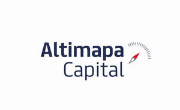

Trade Mark Journal No.2025/009 28 February 2025
UK00004162012 18 February 2025 (36)

- Class 36
- Financial banking; Financial investment; Financial investments; Financial underwriting; Financial and monetary services; Financial lending; Financial transactions; Financial and monetary services, and banking; Financial securities; Financial assistance; Financial services; Financial management; Management (Financial -); Financial evaluations [banking]; Financial brokerage; Brokerage (Financial -); Financial affairs; Financial engineering; Financial sponsorship; Sponsorship (Financial -); Financial consulting; Financial economic analysis; Financial forecasting; Banking and financial services; Insolvency services [financial]; Financial investment services; Financial consultancy; Consultancy (Financial -); Financial information; Information (Financial -); Financial planning; Financial valuations; Valuations (Financial -); Financial and monetary transaction services; Financial economic advisory services; Economic financial research services; Economic research services [financial]; Financial information services relating to financial bond markets; Financial advice; Financial information services relating to financial stock markets; Financial research; Research (Financial -); Financial appraisal; Personal financial banking services; Financial leasing; Financial analysis; Analysis (Financial -); Financial credit services; Financial analyses; Financial patronage; Financial appraisals; Appraisals (Financial -); Financial solvency investigations; Financial evaluations; Financial management of funds; Financial loan services; Financial investment brokerage; Financial evaluation; Financial exchange; Financial management for businesses; Personal financial planning; Financial information for investors; Financial assessments; Management of financial assets; Financial management of pensions; Financial sponsorship services; Financial transaction services; Financial loan consultancy; Financial affairs services; Financial guardianship; Financial studies; Studies (Financial -); Financial savings services; Financial management relating to banking; Financial fund management; Financial investment management services; Financial valuation services; Financial banking services for the withdrawal of money; Financial trust operations; Financial management of stocks; Financial management of companies; Financial investment fund services; Financial planning services; Financial brokerage services; Financial loss management; Financial management services; Financial appraisal services; Personal financial planning services; Financial investment research services; Financial consultation; Factoring of financial undertakings; Brokerage of financial derivatives; Consultations [financial]; Risk management [financial]; Financial risk management; Financial services relating to investment; Financial research services; Financial management of cash accounts; Financial asset management; Arranging of financial investments; Financial loans to commerce; Financial analysis services; Financial management relating to investment; Financial investment advisory services; Financial payment services; Financial credit services for exporters; Provision of financial securities; Business liquidation services, financial; Planning (estate -) [financial]; Evaluation (Financial -) [insurance, banking, real estate]; Financial evaluation [insurance, banking, real estate]; Clearing-houses, financial; Financial information services; Financial investigation services; Financial trust management; Financial management services relating to banking institutions; Acquisition for financial investment; Clearing, financial; Financial clearing; Financial risk management services; Financial advisory services; Financial market information services; Financial consulting services; Financial nominee services; Financial and investment consultancy services; Financial intermediary services; Actuarial services relating to financial transactions; Financial trust planning; Financial planning for retirement; Financial pre-payment services; Asset evaluation [financial]; Financial services relating to business; Financial assessment of company credit; Financial exchange services; Financial investment in the field of securities; Brokerage services in financial markets; Financial consultancy relating to loans; Financial portfolio management; Personal financial planning advisory services; Pension fund financial management; Financial underwriting and securities issuance (investment banking); Financial banking services for the deposit of money; Trading of financial derivatives; Financial planning and management.
Pedro Alexandre Cadinha Tavares